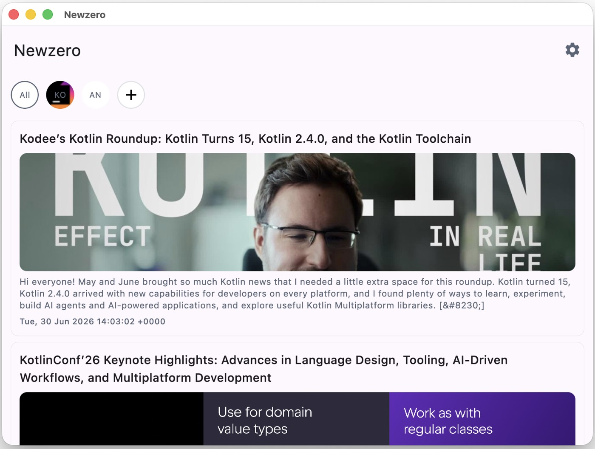
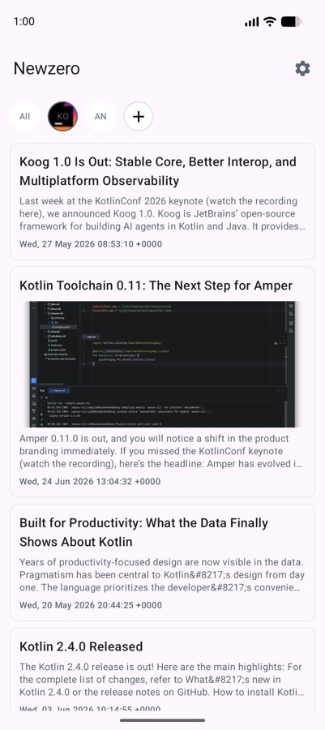
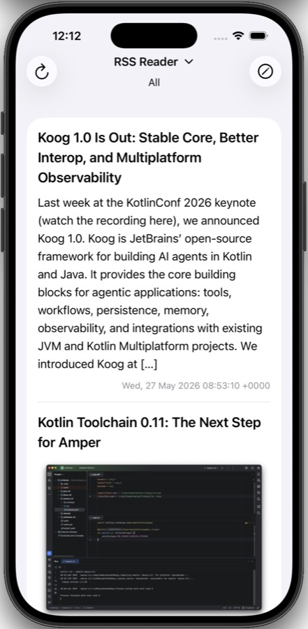

Newzero: one codebase, five platforms, no tracking
RSS never died, it just stopped being a business. That turns out to make it a very good thing to build on.

Every few years someone declares RSS dead. It isn't — it's just unmonetisable, which in this industry looks similar from the outside. Nobody can inject an ad into an XML feed you fetch yourself, and nobody can build an engagement algorithm on top of a list you control.
That's precisely why it's pleasant. You choose the sources, you get everything they publish in order, and nothing decides what you should have wanted instead.
Newzero is my reader for it, and it was also the excuse I wanted to find out whether Kotlin Multiplatform plus Compose Multiplatform can genuinely carry a real app across five targets. Short answer: yes, more completely than I expected.
Five platforms, one codebase
Android 8+, iOS 16+, macOS, Windows and Linux. Not five ports — one shared codebase with the UI written once in Compose.



The thing that still surprises me is that the iOS build is Compose too — not SwiftUI with a shared business layer, which is the more common KMP arrangement. The screens you see on the iPhone are the same Kotlin composables as the ones on Linux.
That's the part of the KMP pitch I was most sceptical about, and it's the part that held up best.
The stack
| Concern | Choice |
|---|---|
| Language | Kotlin 2.3.21 |
| UI | Compose Multiplatform 1.11.0, Material 3 |
| Networking | Ktor 3.4.3 |
| Feed parsing | xmlutil via Ktor XML content negotiation |
| Images | Coil 3 |
| DI | Koin |
| Persistence | multiplatform-settings |
| Background sync | WorkManager (Android) |
Parsing deserves a note. RSS and Atom are different formats that do the same job, and most readers handle this with two parsers and a pile of branching. Newzero registers both through Ktor's XML content negotiation and normalises them into one internal model at the boundary. Everything above that layer stops caring which format a feed used, which removes an entire category of bug from the rest of the app.
Redux, in Compose
State is handled with a Redux-style unidirectional flow — sealed Action and Effect classes, one reducer, one state object.
I don't reach for this on every project; on a small screen it's ceremony. It earned its place here because of the platform count. When state transitions live in a reducer that's just a function from state and action to new state, they're identical on every platform by construction — and testable without a UI at all. The alternative, state scattered through composables and view models, is exactly where cross-platform apps drift apart into five subtly different behaviours.
Sealed classes make it pleasant in Kotlin specifically: the compiler tells you when a when block has stopped being exhaustive, so adding an action forces you to handle it everywhere it matters.
Offline, in two tiers
There's an in-memory cache and a disk cache. Memory answers instantly while you scroll; disk survives a restart and means opening the app on a train shows you everything from the last sync rather than a spinner and an error.
A reader that's useless without a connection has misunderstood the point. Fetching happens when there's network; reading should always work.
On Android, WorkManager handles background sync so articles are already there when you open it. The desktop and iOS builds sync on launch and on demand — each platform's background execution model is different enough that this is one of the few places the shared code deliberately doesn't try to be identical.
Where multiplatform got in the way
Being fair about it, because "write once, run everywhere" is never the whole story.
Platform-specific work still exists. Background sync, file paths, and system theme detection all needed per-platform implementations. KMP gives you expect/actual for this, and it's clean, but it isn't free.
Desktop input is not touch input. Compose gives you the same widgets everywhere, which is not the same as the right interaction everywhere. Hover states, right-click, keyboard navigation and scroll behaviour all needed separate attention. A tap target sized for a thumb looks strange under a mouse cursor.
Build times. Compiling for five targets is exactly as slow as it sounds. Day-to-day you build one, but CI feels it.
The ecosystem thins out fast. Ktor, Coil and Koin all support KMP properly. Plenty of libraries don't, and discovering that after you've designed around one is a bad afternoon.
None of these made me regret the choice. Five native apps from one codebase is still an enormous saving; I just don't want to pretend the multiplier is free.
What it doesn't have
No accounts. No sync service. No recommendations. No tracking, no ads, no subscription. MIT licensed.
Some of that is principle and some is that I didn't want to run a server. But the absence is the feature: your feed list is yours, on your device, and the app's only job is to fetch what you asked for and get out of the way.
← All posts